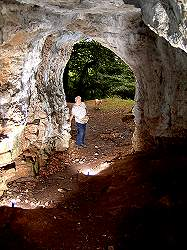

King Arthur's Cave
Useful Information
|  |
| Image: Tony Oldham in King Arthur's Cave, view out of the cave entrance. © Anne Oldham, with kind permission. |
| Location: |
Southeast slope of the Little Doward Hill.
North of Monmouth on the A40. Ganarew / Doward / Crocker's Ash exit.
NGR SO 5450 1560 |
| Open: | n/a |
| Fee: | n/a |
| Classification: |
|
| Light: | none, bring torch. |
| Dimension: | A=120m asl, L=45m. |
| Guided tours: | n/a |
| Photography: | |
| Accessibility: | |
| Bibliography: |
Tony Oldham, Keith Jones (2003):
Caves of the South Eastern Outcrop,
Available from:
|
| Address: | |
| As far as we know this information was accurate when it was published (see years in brackets), but may have changed since then. Please check rates and details directly with the companies in question if you need more recent info. | |
| Last update: | $Date: 2015/11/20 13:18:26 $ |
History
Description
 |
| Image: Tony Oldham in front of the two big cave entrances. © Anne Oldham, with kind permission. |
This small cave is said to be one possible place, where King Arthur and his knights rest, until Britain needs them again.
The cave has three entrances, two big enough to walk in and one very low one. The cave is rather small and looks very much artificially enlarged. To be honest, there is nothing which remembers King Arthur, and so the whole hassle is a matter of the visitors fantasy.
Tony Oldham and Keith Jones wrote a detailed description of this cave and added an enormous amount of references. Please follow the link below. We thank the authors for the permission to reprint it.
 |
| King Arthur's Cave Gallery |
 King Arthur's Cave,
excerpt from
Tony Oldham, Keith Jones (2003):
Caves of the South Eastern Outcrop,
Available from:
King Arthur's Cave,
excerpt from
Tony Oldham, Keith Jones (2003):
Caves of the South Eastern Outcrop,
Available from:
 Location by UK Streetmap
Location by UK Streetmap King Arthur's Cave
King Arthur's Cave Arthur's Cave
Arthur's Cave{kind=link}